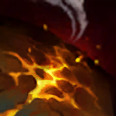

起手裝備
 長劍
長劍

保留本頁暴擊持續輸出線。補得的中路來源另列三相／魔劍技能穿插線，兩套資源與成形節奏不同，不把三相或女神之淚零散混入既有奪魄、狂暴、無盡核心。


五件成裝與鞋子分開列示；起手與核心是購買路線，不是額外佔用的成裝欄位。鞋子完成時機仍依對線壓力與回城金錢調整。


本站ID empowerment實際為先發制人，保留遠距先手消耗方向；精準主系及骨甲不變，與來源征服者長戰方案分開。


閃現光盾保留中路對刺客容錯，不因飛龍路指南改成雙人線用法。
加點優先：Q > E > W
主Q副E、W最後獲同路資料支持；保留已依官方修正的16%額外真傷、R累積六次命中與四枚超級導彈，不恢復強化W包裹。
普攻及魔法彎刀效果附加16%額外真實傷害。R命中敵方英雄累積六次後會在身旁空投補給，拾取取得四枚超級導彈；不再強化女武神特攻。
投擲磷光炸彈造成範圍魔法傷害並短暫揭露區域。
有後續版本調整的項目以較新數值為準；未列出者不代表完整技能成長表。

向前飛行並留下燃燒地帶造成持續魔法傷害；只有此一般版本，沒有拾取包裹後的強化長距離衝刺。
持續掃射造成物理傷害並逐步降低物防與魔防；普攻敵方單位時會自動朝該目標射擊，仍需維持有效距離。
有後續版本調整的項目以較新數值為準；未列出者不代表完整技能成長表。
發射造成範圍物理傷害的導彈，每第三枚為傷害與範圍更大的超級導彈，最多儲存四枚；普攻命中英雄縮短充能。R命中英雄累積六次後，在身旁拾取空投另取得四枚超級導彈。
有後續版本調整的項目以較新數值為準；未列出者不代表完整技能成長表。
依官方6.0c及6.2c移除包裹／強化W舊內容，改16%額外真傷與R命中六次後四枚超級導彈。
4技火箭 → 1技炸彈 → 普攻 → 3技掃射
先以火箭逼走位，再用一技與普攻補傷害；能安全貼近時才開三技削防。
多次命中英雄累積 → 安全拾取空投 → 安全時3技削防 → 普攻 → 取得的超級導彈
R命中英雄累積六次後在身旁產生空投，需實際拾取才取得四枚超級導彈；不是按滿六次就一定有層數，也沒有強化W包裹。
1技 → 4技超級導彈 → 普攻 → 2技後撤
一技與超級導彈快速壓低血量，普攻後立即用二技退出反打範圍。
用一技與普攻穩定清線，三技持續掃射能降低雙防，但不要為了打滿傷害走進刺客的貼身範圍。二技主要用來保命，沒有視野時避免主動向前使用。
奪魄之鐮 → 狂暴利刃 → 無盡之刃為預設前三件。保留奪魄、狂暴、無盡的中路暴擊線，臨界點處理持續普攻雙穿，嗜血者續航；不直接套飛龍路Tier。
保持射手距離，用Q、R與普攻消耗，安全時E削弱雙防。R命中英雄累積六次取得四枚超級導彈後再安排爆發；W留給撤退，不再規劃已移除的包裹分割。
保留庫奇中路原有對局並補應對窗口，未搬入duo對線名單。
對局名單是機制與分路判斷，不代表固定勝率；需同時看雙方熟練度、兵線與陣容。
保留奪魄、狂暴、無盡的中路暴擊線，臨界點處理持續普攻雙穿，嗜血者續航；不直接套飛龍路Tier。
保留防禦技能處理R進場與延遲印記，不把所有自保資源用來清線。
煙幕與E／R可拖掉爆發，避免無視野把全部技能丟進煙幕。
依本頁目前五件成裝與鞋線替換；同一格多個建議擇一。先看實際傷害和控制，再決定是否犧牲輸出或保命。
高
觸發：以致死宣告系成裝替換既有後段穿透格；臨界點或多明尼克與新穿透裝不無腦疊加。
臨界點 → 致死宣告
以致死宣告系成裝替換既有後段穿透格；臨界點或多明尼克與新穿透裝不無腦疊加。
以致死宣告系成裝替換既有後段穿透格；臨界點或多明尼克與新穿透裝不無腦疊加。
鞋子更換時需連同三級升級路線一起更換；五件成裝不含鞋，主動裝仍占成裝格。
高
觸發：只有護盾持續妨礙擊殺時才換巨蛇鋒牙；原本的防禦、續航或三相普攻收益會降低。
嗜血者 → 巨蛇鋒牙
只有護盾持續妨礙擊殺時才換巨蛇鋒牙；原本的防禦、續航或三相普攻收益會降低。
只有護盾持續妨礙擊殺時才換巨蛇鋒牙；原本的防禦、續航或三相普攻收益會降低。
鞋子更換時需連同三級升級路線一起更換；五件成裝不含鞋，主動裝仍占成裝格。
高
觸發：復活甲提供團戰第二次機會，仍須隊友保護復活位置；已有復活甲時保留，別重複購買。
嗜血者 → 守護天使
復活甲提供團戰第二次機會，仍須隊友保護復活位置；已有復活甲時保留，別重複購買。
復活甲提供團戰第二次機會，仍須隊友保護復活位置；已有復活甲時保留，別重複購買。
鞋子更換時需連同三級升級路線一起更換；五件成裝不含鞋，主動裝仍占成裝格。
高
觸發：法術爆發為主時後段改魔提斯深淵；若另外已換盾弓或史特拉克，需重新檢查命脈重複。
嗜血者 → 魔提斯深淵
法術爆發為主時後段改魔提斯深淵；若另外已換盾弓或史特拉克，需重新檢查命脈重複。
法術爆發為主時後段改魔提斯深淵；若另外已換盾弓或史特拉克，需重新檢查命脈重複。
鞋子更換時需連同三級升級路線一起更換；五件成裝不含鞋，主動裝仍占成裝格。
高
觸發：魔法傷害與可被韌性縮短的控制占主導時，整條鞋線改水星之靴→鎖鏈軍靴；韌性不縮短擊飛。
貪婪護脛 → 水星之靴
魔法傷害與可被韌性縮短的控制占主導時，整條鞋線改水星之靴→鎖鏈軍靴；韌性不縮短擊飛。
魔法傷害與可被韌性縮短的控制占主導時，整條鞋線改水星之靴→鎖鏈軍靴；韌性不縮短擊飛。
鞋子更換時需連同三級升級路線一起更換；五件成裝不含鞋，主動裝仍占成裝格。
本頁校正版本：7.3b；校正日期：2026-10-15。
參考來源標示版本：7.3a同分路配置＋7.3b官方差異
Tier、出裝、符文與對局是本站編輯建議，不是官方推薦或已驗證台服勝率。v118延續同日v117的逐路複核，針對來源缺口及數值衝突再核對；未宣稱所有技能已在手機內逐級實測。
評級理由：本站A定位為中路持續輸出與導彈消耗，需要隊伍另外提供控制；遇刺客須保留W與光盾，不因飛龍路A直接套用中路結論。
Riot 官方資料 ↗ · WildRiftFire 參考攻略 ↗ · Riot 官方資料 ↗ · Riot 官方資料 ↗ · wr-meta.com ↗
已讀取WR-META實際同分路配置，而非頁首其他分路Tier。正文標示7.3A，與7.3b官方裝備／符文／野區差異合併複核，未採其未驗證統計。
本站A定位為中路持續輸出與導彈消耗，需要隊伍另外提供控制；遇刺客須保留W與光盾，不因飛龍路A直接套用中路結論。
保留本頁暴擊持續輸出線。補得的中路來源另列三相／魔劍技能穿插線，兩套資源與成形節奏不同，不把三相或女神之淚零散混入既有奪魄、狂暴、無盡核心。
歷史資料有後續調整時，以較新版本數值為準。
| 項目 | 調整前 | 調整後 |
|---|---|---|
| 每級物攻 | 3 | 2.5 |
| 項目 | 調整前 | 調整後 |
|---|---|---|
| 傷害 | 65 / 125 / 185 / 245 + 125%額外物攻 + 80%魔攻 | 60 / 120 / 185 / 240 + 110%額外物攻 + 100%魔攻 |
| 項目 | 調整前 | 調整後 |
|---|---|---|
| 雙防降低 | 10 / 14 / 18 / 22 | 12 / 14 / 16 / 18 |
| 項目 | 調整前 | 調整後 |
|---|---|---|
| 導彈額外物攻係數 | 70%額外物攻 | 65%額外物攻 |
| 超級導彈額外物攻係數 | 140%額外物攻 | 130%額外物攻 |